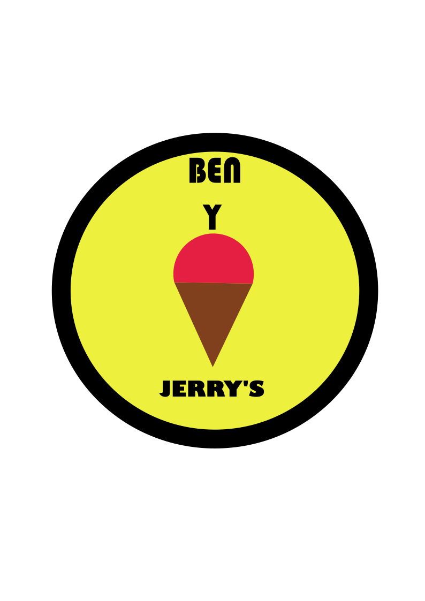

Sabores
Acerca de
Ingredientes conscientes
¡Nuestros ingredientes promueven un cambio positivo y eso hace que nuestro helado tenga un sabor sensacional!
Éxito compartido Buscamos crear prosperidad para todas las personas que están conectadas con nuestro negocio.
Haciendo la diferencia
Generamos consciencia y apoyamos los problemas que nos importan.
¿Cómo te gusta el helado?
Hay muchas formas de disfrutar Benito & Jeremy's. Cubrimos nuestras bases con sabores que satisfacen a todos los paladares.
Prueba nuestros diferentes sabores y tamaños, ya sea en la tienda o pidelo desde tu casa.
Pagina creada por:
Solis Alvarado Fernando Edwishg
Gomez Ocampo Hugo
> Sosa Mendoza Rodrigo
Examen 2do Parcial
GRUPO: 4IV7